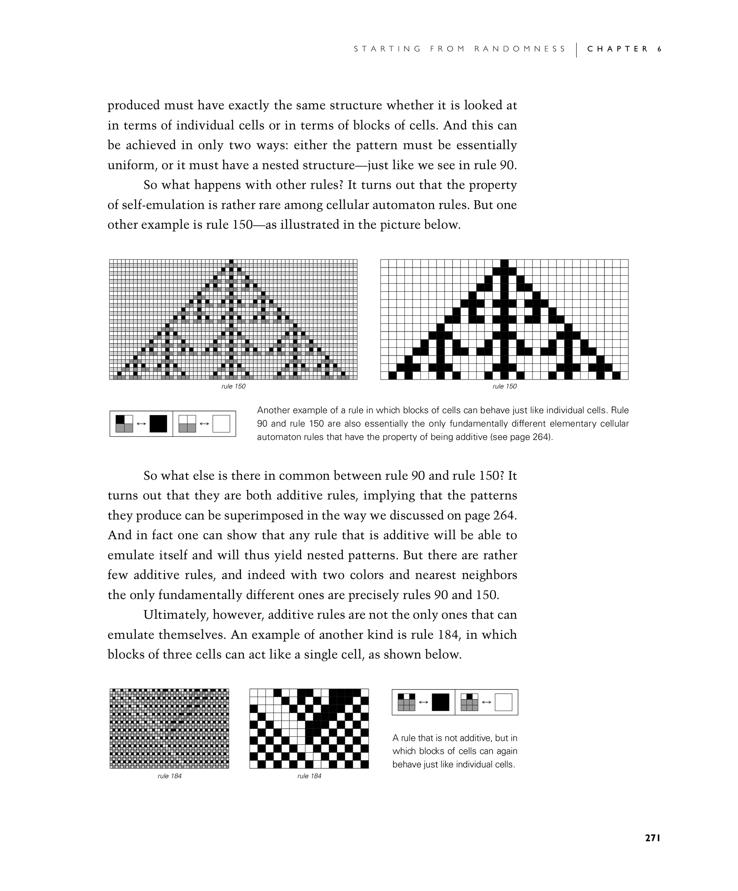
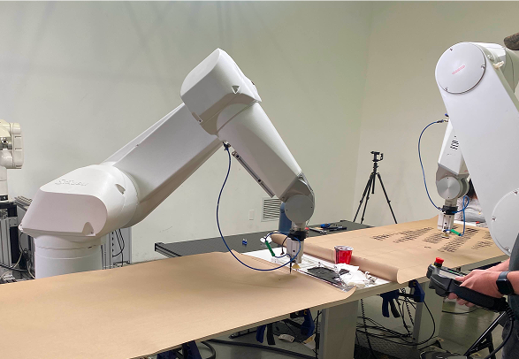
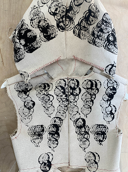
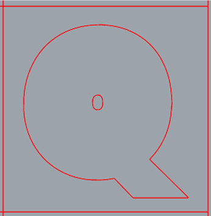
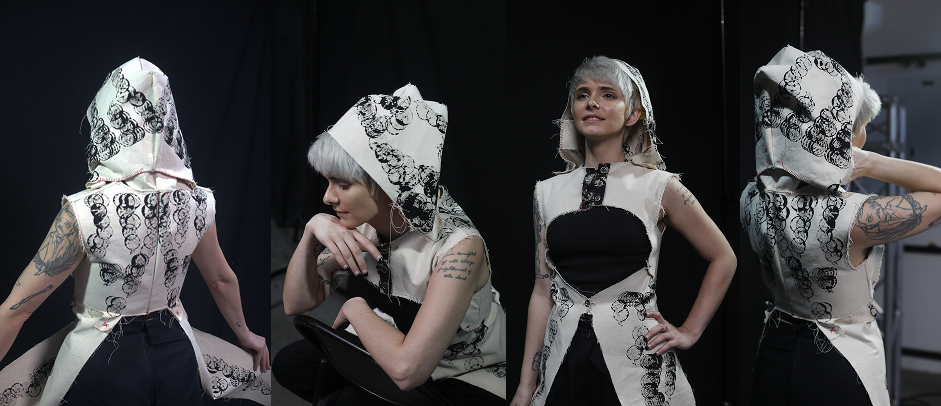
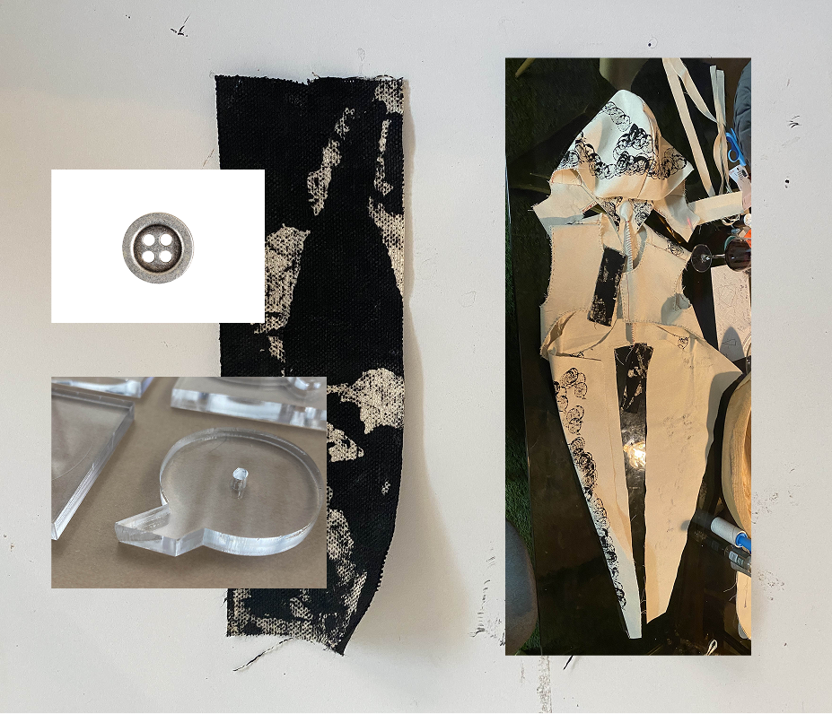

Rule 90
Admiral’s Vest
Making+Meaning
Southern California Institute for Architecture


Canvas, code, and choreography converge in this speculative fashion piece, robotically stamped with Wolfram’s Rule 90—a cellular automaton where a single black pixel unfolds into a Sierpiński triangle. The pattern embodies a paradox: simple rules can yield immense complexity, much like the emergent behaviors that shape societies, ecosystems, and minds. The repeated “Q” shape, unaltered but recursively patterned, nods to the elegance of the human mind in motion—querying, adapting, updating.



Tailored for correct posture, the vest becomes an interface for presence and dignity, training the body as much as it adorns it. It gestures toward a future where fashion educates—where garments don’t just clothe, but embody logic, symmetry, and theory. This is clothing as cognitive artifact, cut from the future and hand-stitched with intent.
